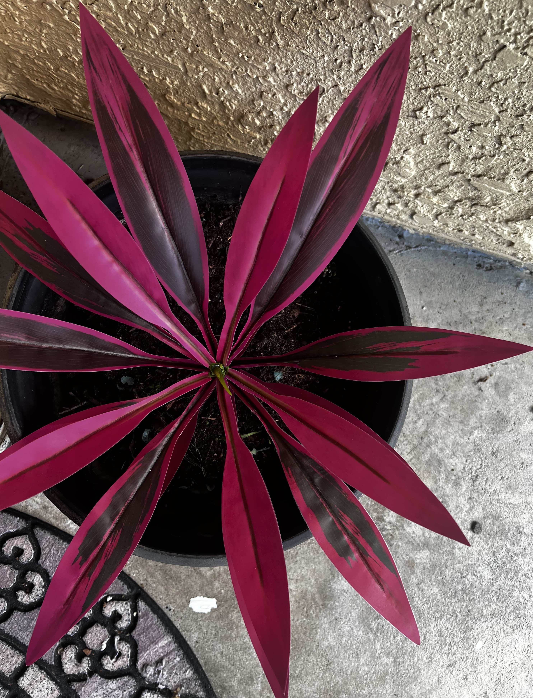
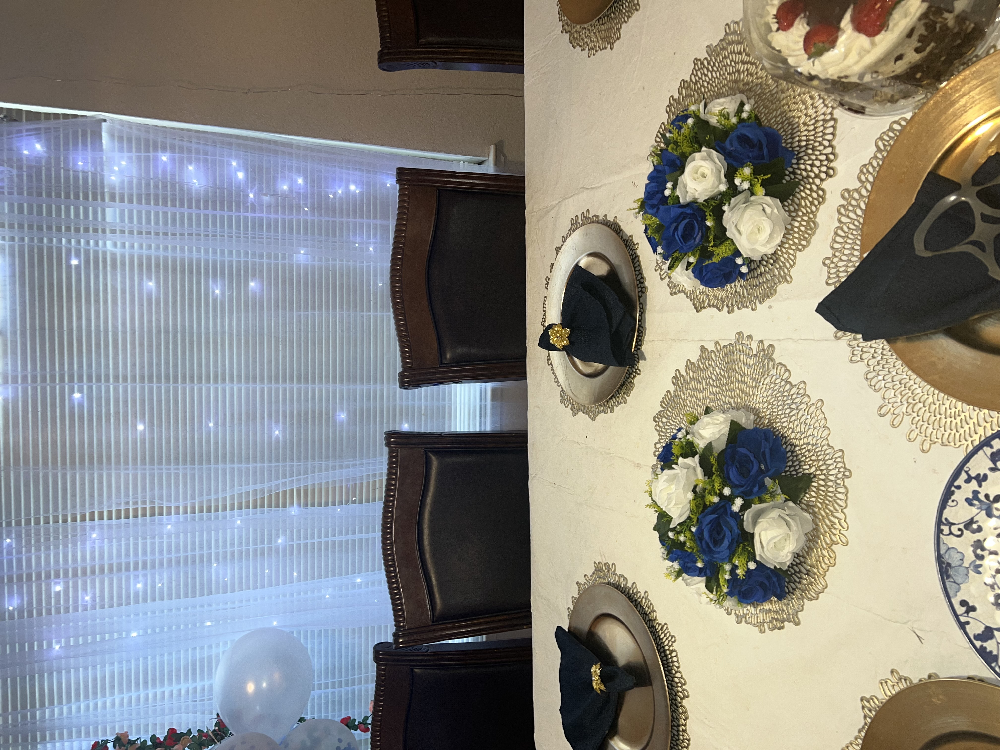
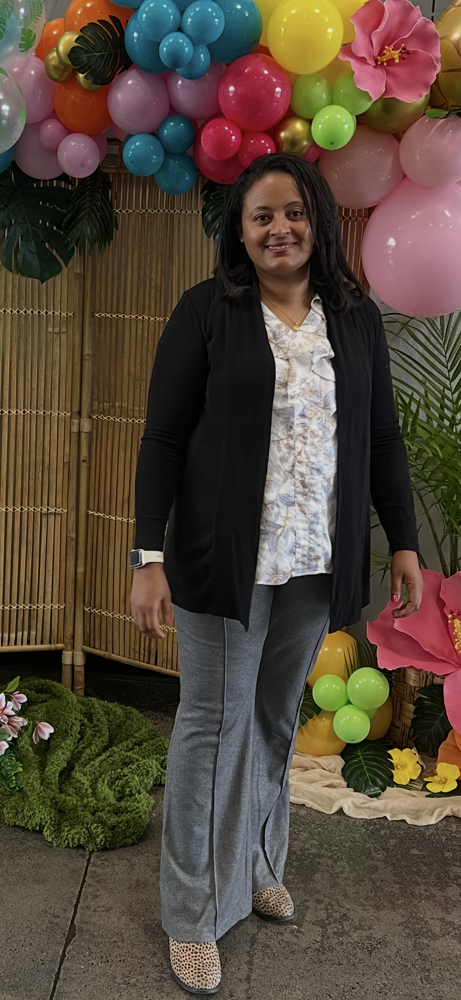
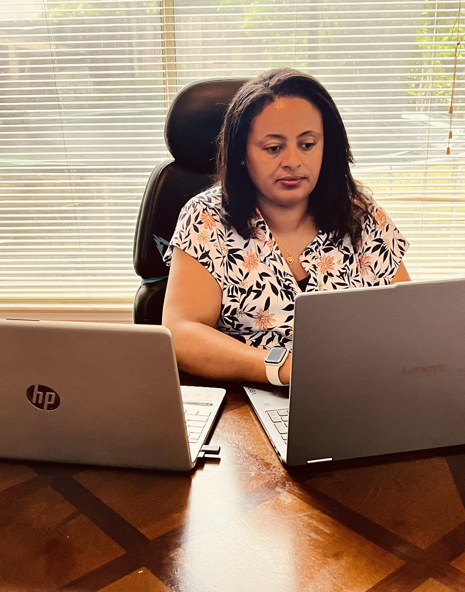

Baking

Gardening

Catering

Sacramento, California -based Multi-talanted professional,Nurse, and Culinery Artist,
Serving the community through healthcare and creativity, with a vision for future culinery and digital ventures.

With over 20 years of experience in banking, healthcare and aviation,
I'm a dedicated lifelong learner
holding Bachelor’s Degrees in Business Management,
Public Administration and Developmental management,
alongside associate degrees in
Human Resources and Social Science and certified nurse.
I'm planning to launch my own restaurant and online platform while
continuing my advanced studies in health sciences.



Sonia A.J. is a multi-talented professional based in Sacramento, California, where she lives with her husband and four children. A dedicated lifelong learner, Sonia holds Bachelor’s Degrees in Business Management, Public Administration and Developmental management, alongside associate degrees in Human Resources and Social Science.Beyond her academic achievements, she is a certified nurse committed to serving her community’s health needs over ten years. With over 20 years of experience, Sonia’s career spans the banking, aviation, and healthcare industries. Her versatile skill set is backed by certifications in records management, airline operations, and more than 10 great achievement rewards. From the fast-paced corridors of aviation and banking to high touch world of healthcare, Sonia has built a career on the principle of service and blends analytical precision with deep human empathy. A true “multipotentialite, as a mother of four, she understands the art of balance and the nurturing growth-traits that extend into her vibrant personal life as an avid cook, gardener, and painter. Sonia is a gifted culinary artist known for her tremendous ability and capability to make different varieties of foods, breads, and pastries for birthdays and weddings events. Some of her favorite bread types known by neighborhoods are French Breads, Garlic Breads, Milk Breads, seeded whole wheat/grain Breads, Raisins Breads, Easy rolls and Chocolate Breads. Whether she is gardening, painting or baking her signature French and garlic breads, her passion for creativity shines through. Her love for the culinary arts has evolved into professional event catering venture, and looking ahead, Sonia aims to launch her own restaurant and online platform while continuing her advanced studies in health sciences.